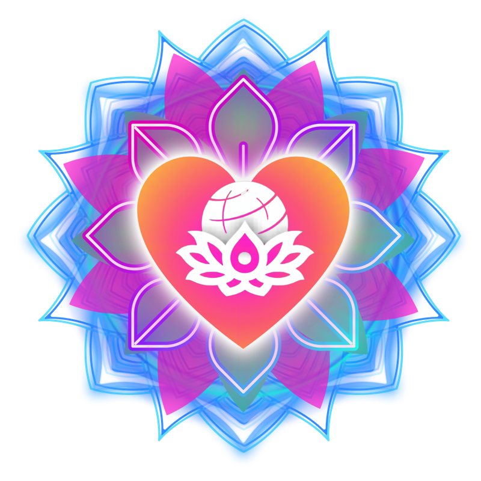
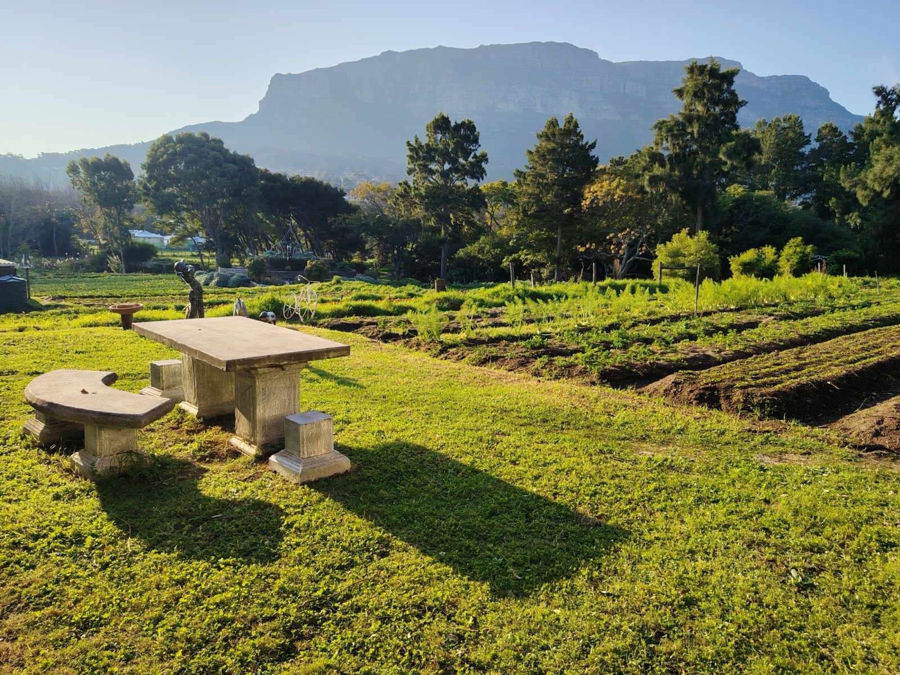
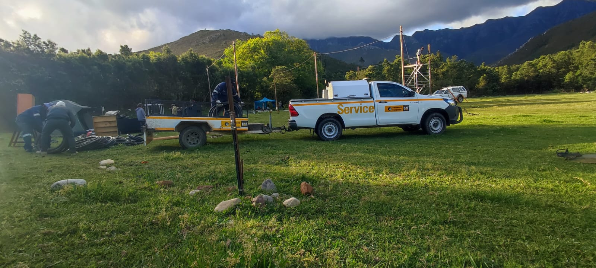
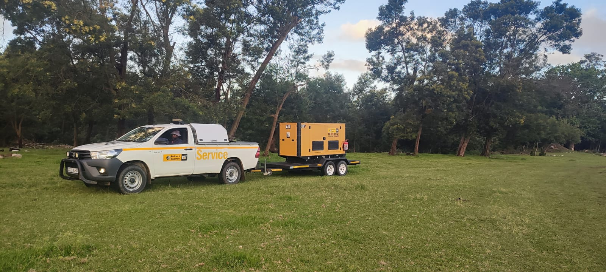
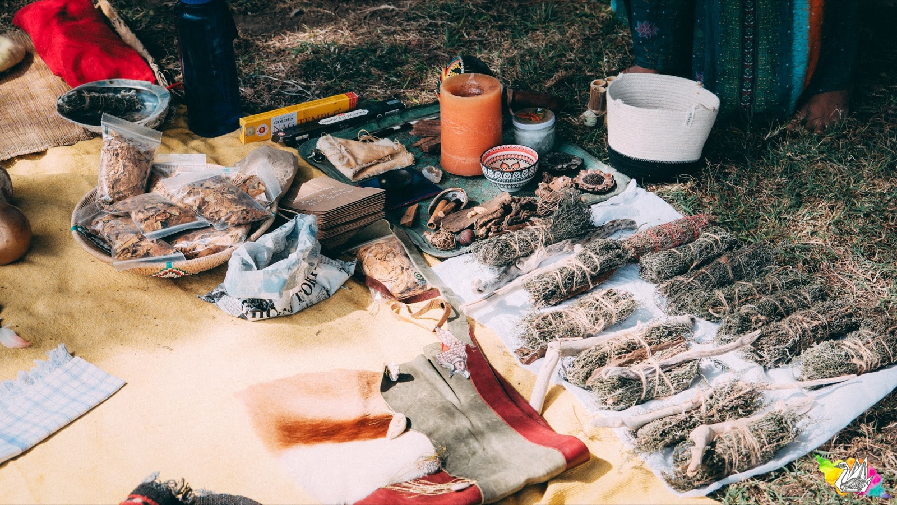
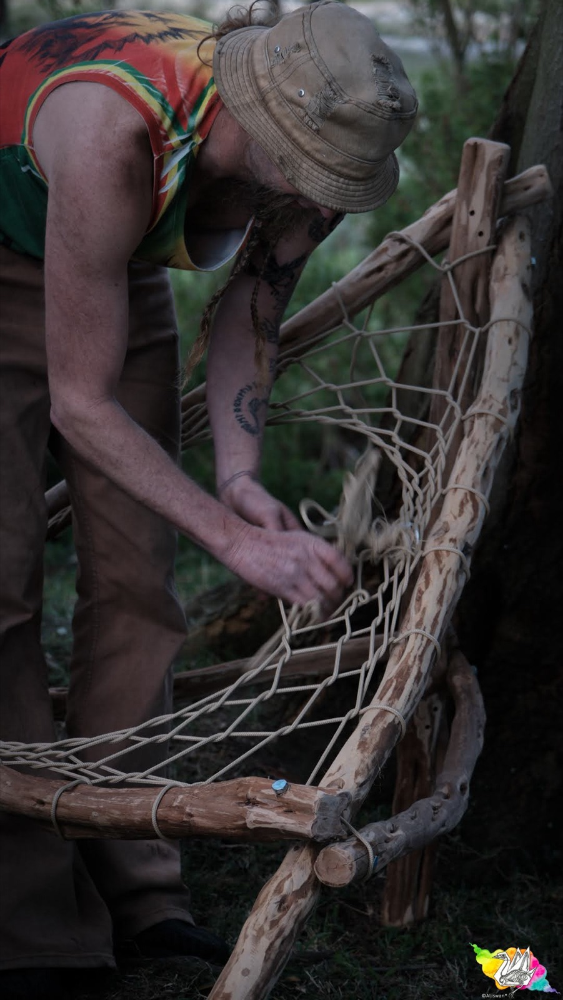
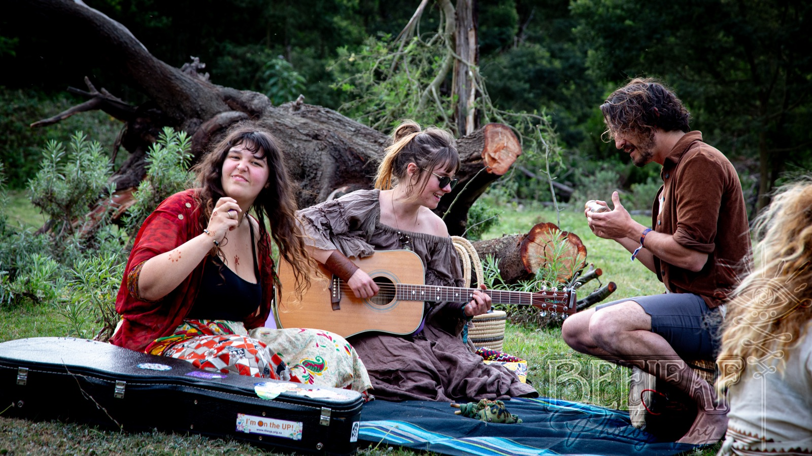

18–20 September 2026 · Kromrivier Farm · Western Capeearthdance cape town
Thank you for dancing with us.
Heart and Beat of Humanity came to Kromrivier Farm for three days of dancefloors, workshops, ceremonies and camping under the mountains, held around the worldwide Prayer for Peace linkup at 01:00 SAST on Sunday 20 September.
More than a festival weekend
Earthdance is a gathering shaped by music, movement, creativity, participation and a shared moment of global connection. Each year, Earthdance communities around the world come together for the Prayer for Peace: a synchronised linkup that reminds us we are part of something bigger than one dancefloor, one city or one scene.
Cape Town is one expression of that global movement. Ours is a spring gathering rooted in people, place and the simple power of coming together well.
The weekend, and the moment at its centre
For three days in September, Kromrivier Farm was a town of people who came to take part: two stages, a market village, ceremonies, workshops and a camping field under the mountains.
At 01:00 SAST on Sunday 20 September we joined Earthdance gatherings around the planet for the Prayer for Peace: the same words, at the same time, on every Earthdance dancefloor on Earth. Everything else was built to hold that moment.
Revisit 2026
The Prayer for Peace
The global linkup at the centre of the weekend, and why it is the reason Earthdance exists.
Read about the prayer →The market village
The food, craft, clothing and wellness vendors who made the farm feel like a town.
Meet the vendors →Caring for the farm
Three waste streams sorted at source, no glass, and a leave-no-trace promise held together.
How we look after the land →"Earthdance begins before September. The festival is the meeting point, not the whole story."
This year's theme: Heart and Beat of Humanity
The theme was the shape of the road. We built toward Earthdance through a series of warm-up gatherings, each with its own energy, each one chapter closer to the farm.
01 · Heart
Opened the journey through connection, community and place — a winter day at Love in a Bowl, Hout Bay.
Read the story →02 · Beat
Raised the pulse: rhythm, movement and night energy at Leopard's Rest Hall, Hout Bay.
Read what Beat was →03 · Humanity
The last warm-up: psy-tech, psytrance and techno at Biblio in the city, Friday 21 August.
Read about the gatherings →04 · Earthdance
The convergence: three days at Kromrivier Farm, with the global Prayer for Peace at the centre.
See the 2026 lineup →Heart at Love in a Bowl
The first chapter of this journey began at Love in a Bowl in Hout Bay — a community farm that grows organic vegetables to help feed its town.
Heart was more than a warm-up event. It was a real meeting point between communities, and a reminder that Earthdance grows through relationship, not only promotion. That mattered to us, and it shaped the tone of the whole year.

Two worlds inside the weekend
Earthdance moved across two stages — and one of them changed character completely after dark.
Mellow Meadow
Ritual, workshops and the central sacred fire through the daylight hours — the heart of the gathering, not its quiet edge.
Then the light went and the meadow was handed over: a techno takeover, then drum & bass until the early hours.
See who played →Sonic Horizon
Kinetic, rhythmic and immersive: the stronger dancefloor pulse of the weekend, carrying psytrance from the first sets through to sunrise.
It is also where the Prayer for Peace landed.
See who played →Sound you could feel, clarity you could hear
Our Main Stage sound for 2026 was supplied and engineered by 8-bit Productions, on a d&b audiotechnik system built to stay clean and controlled wherever you were standing — deep at the front, still detailed all the way to the edges of the floor.

Main Stage sound by 8-bit Productions, on d&b audiotechnik.
Keeping the lights on, gate to gate
Earthdance Cape Town 2026 was officially powered by Barloworld Power Rental. From early site setup right through the main stage performances, Barloworld's temporary power solutions and on-site support kept the festival running smoothly, with reliable Cat® rental generators and distribution equipment behind the lights and sound all weekend.


The power build at Kromrivier Farm, ahead of Earthdance Cape Town 2026
Powered by Barloworld Power
Be first to know
Join the waiting list and we will tell you first when 2027 tickets open, along with news of Earthdance gatherings between now and then.
Earthdance is built by people
If you want to help make the gathering — with your food, your craft, your hands or your practice — these pages show how it worked in 2026. Join the waiting list above and we will let you know first how to take part next time.

Vendors
Good food, useful goods, beautiful craft and wellness offerings in the market village.
About vending →
Volunteers
Help build, hold and pack down the gathering — from decor and gates to guest support.
About volunteering →
Collaborators
Lead a workshop, talk, movement session or practice as part of the festival programme.
About collaborating →From Earthdance 2026, by the photographers who were there · open the gallery